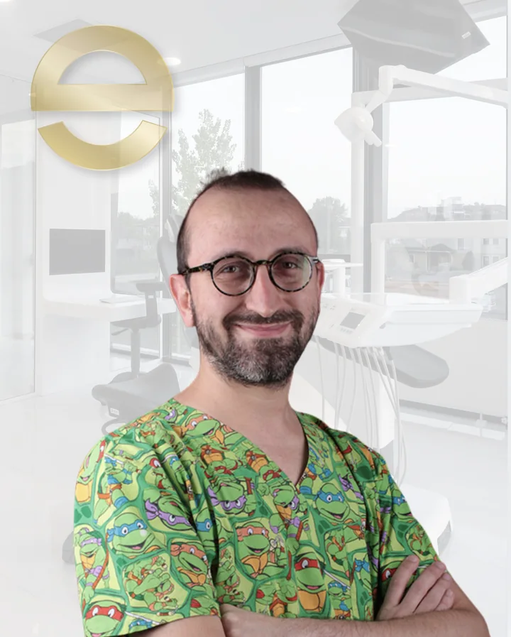
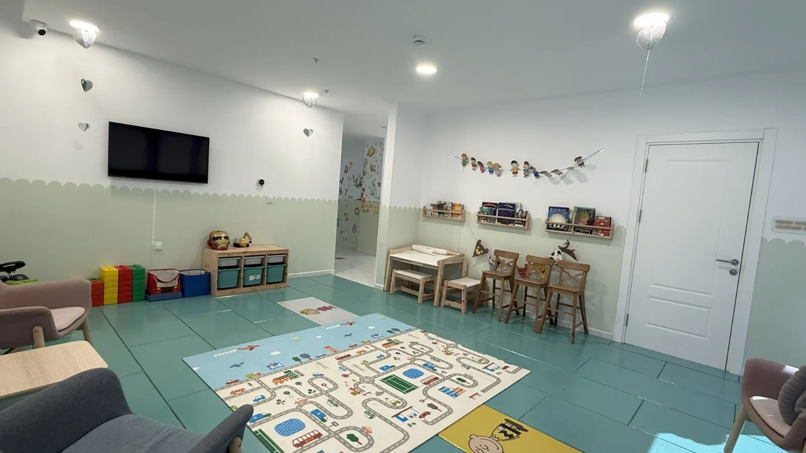
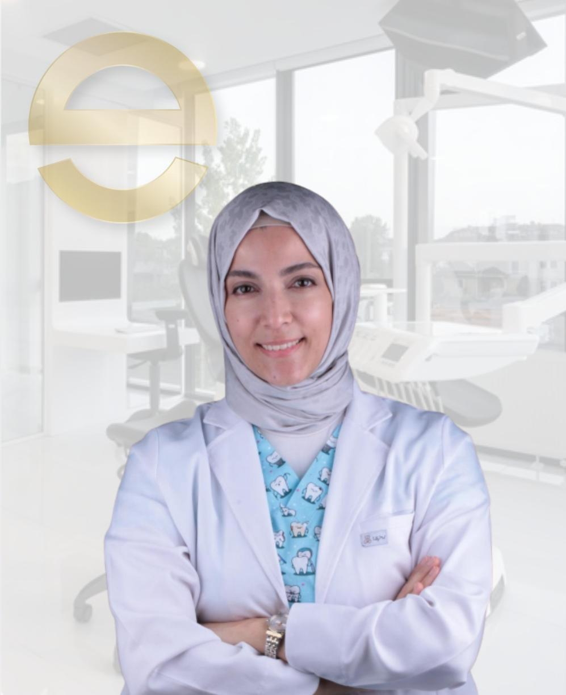
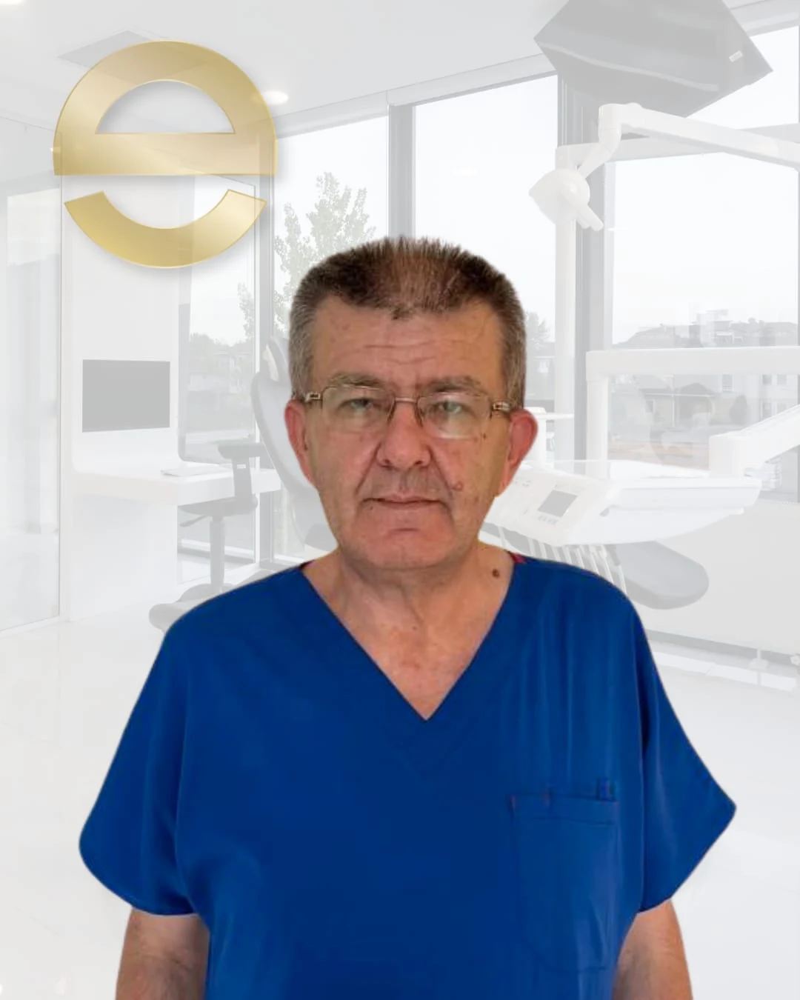

Dr. Dt. Serhat Çalışkan
Pedodonti (Çocuk Diş Hekimliği) Uzmanı
Serdivan Merkez Şubesi · Özgeçmişi Gör →Çocuklarımızın diş hekimi koltuğuyla kurduğu ilk bağ ömür boyu sürer. Serdivan Merkez Şubemizdeki özel çocuk oyun alanı, 2 Pedodonti Uzmanımız (Dr. Dt. Serhat Çalışkan ve Uzm. Dt. Nilüfer Sümeyra Yıldırım), rubber dam izolasyonu ve gerektiğinde bilinçli sedasyon/genel anestezi desteğiyle korkusuz çocuk diş tedavileri sunuyoruz.
Çürük oluşmadan önce mine direncini artıran ağrısız koruyucu kalkan.
Rubber dam izolasyonu ile güvenli, hızlı ve renkli çocuk dolguları.
İleride oluşabilecek ortodontik çapraşıklıkları önleyen rehber apareyler.
Anestezi uzmanımız ve pedodonti uzmanlarımızın ortak ameliyathane protokolü.


Pedodonti (Çocuk Diş Hekimliği) Uzmanı
Serdivan Merkez Şubesi · Özgeçmişi Gör →
Pedodonti (Çocuk Diş Hekimliği) Uzmanı
Serdivan Merkez Şubesi · Özgeçmişi Gör →
Anesteziyoloji ve Reanimasyon Uzmanı
Serdivan Merkez Şubesi · Özgeçmişi Gör →Sakarya Serdivan Merkez Şubemizde (İstiklal Mah. 2. Cad. No: 13, 54050 Serdivan/Sakarya), Çocuk Diş Hekimliği (Pedodonti) Uzmanı Uzm. Dt. Nilüfer Sümeyra Yıldırım ve Çocuk Diş Hekimliği Doktoru Dr. Dt. Serhat Çalışkan tarafından bebek, çocuk ve gençlerde koruyucu diş hekimliği, süt dişi dolgusu, amputasyon, kanal tedavisi, yer tutucu ve sedasyon/genel anestezi altında çocuk diş tedavileri yürütülmektedir.
Çocuklara özel oyun ve bekleme alanımızda, ilk diş muayenesinden fissür örtücü (diş aşısı), flor uygulaması, süt dişi kanal/dolgu tedavileri ve yer tutucu uygulamalarına kadar tüm süreçler çocuk psikolojisine uygun yürütülür.
Fissür Örtücü Uygulaması, “Diş Aşısı” adıyla da bilinen, azı dişlerin çiğneyici yüzeylerindeki girinti ve olukların, akışkan bir dolgu maddesiyle kaplanarak gerçekleştirilen koruyucu diş hekimliği uygulamasıdır. Böylece diş çürüğünün başladığı noktalar olan bu yüzeyler çürüğe karşı dirençli hale gelir.
Florür Uygulaması, diş minesini güçlendirebilen florür aracılığıyla diş çürümelerini önlemeye yönelik koruyucu uygulamadır. Belirli aralıkla uygulandığında diş yüzeyi diş çürüğüne karşı daha sert ve dirençli olur.
Süt Dişinde Restoratif Tedaviler; süt dişlerinin sert dokularını ilgilendiren, bakteri kaynaklı ya da bakteri olmaksızın gelişen rahatsızlıkların teşhis ve tedavilerinin gerçekleştirilmesidir.
Süt Dişi Kök Kanal Tedavisi, süt dişlerindeki çürüğün temizlenmesi ve kök kanalındaki sinirlerin tamamı ya da bir kısmı(amputasyon) çıkarılıp oluşan boşluğun çeşitli yıkama solüsyonları ile dezenfekte edildikten sonra genişletilip doldurulması işlemidir. Bunun sonucunda diş çürüğünün neden olduğu enfeksiyonun süt dişinin altındaki kalıcı dişi etkilemesi engellenmiş olur.
Genel Anestezi ile diş tedavilerini koopere edemeyecek hastaların anestezi uzmanları tarafından kontrollü bir şekilde anestezi ve reanimasyon uzmanımız gözetiminde güvenli uyku (genel anestezi) veya bilinçli sedasyon altında diş tedavilerinin konforlu biçimde tamamlanmasıdır.
Kök Ucu Kapama Tedavisi (Apeksifikasyon), kök oluşumunun tamamlanmadığı kalıcı dişlerde, kökün gelişiminin devamlılığı için uygulanan tedavi yöntemidir. Yapılan kanal tedavisi sonrasında o bölgeye koyulan bir materyal ile enfeksiyon kontrol altına alınıp dişin gelişimini başlatacak hücreler harekete geçirilmektedir.
Yer Tutucular, zamanından önce kaybedilen süt dişlerin oluşturduğu boşluğa komşu dişlerin kaymasını önleyen yardımcı aygıtlardır.
Travma Gören Dişlerde Acil Tedavi, diş ve çevre dokularında oluşan kırık veya yer değiştirme ya da destek dokularda oluşan ayrılma veya ezilme gibi yaralanmalarda uygulanan acil tedavilerdir.
Pediatric dentistry focuses on protecting and treating oral health in infants, children and teenagers.
Preventive applications such as fissure sealants and fluoride treatments, restorative care for primary teeth, root canal treatments for milk teeth and emergency care after dental trauma may be planned according to the child's needs.
Our aim is to support a comfortable and reassuring dental experience for children.